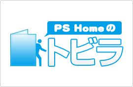
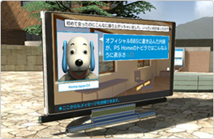
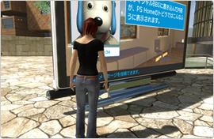
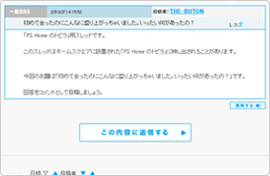
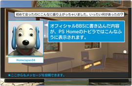

PS Home のみんなで楽しめるPS Homeのトビラが登場！
PS Homeのトビラは、みんなでつくる放送局です。皆さまから募集したお題で、皆さまの手で内容を綴っていく、PlayStation®Home（PS Home） のエンタテインメントです。
しくみはいたってシンプル。オフィシャルBBSに投稿された内容が、ホームスクエアに設置されたスクリーンに、投稿者のオンラインIDとプロフィール画像付きでコメントが次々と表示されます。
ホームスクエアのすべてのインスタンスにブロードキャストされ、そのときにホームスクエアにいる全員で楽しむことができます。


PS Home 運営チームがオフィシャルBBSにPS Home のトビラ指定スレッドを立て、皆さまからの投稿をお待ちしています。
気軽に読んで投稿できるお笑いネタやアンケート、様々なイベントなど、オフィシャルBBS で旬な話題をピックアップしてお届けします。現在アクティブな指定スレッドの情報は、PS Homeのトビラ スレッドをご覧ください。
また、PS Home のトビラ用のネタ募集スレッドでは、随時皆さまからお題を募集しています。PS Home のみんなに聞きたいこと、みんなで投稿したら面白そうな話題などなど、皆さまからのお題をお待ちしています。
見て楽しんだり、お題を出して楽しんだり、様々な楽しみ方ができるので、是非お気軽に参加してみてください。
※ PS Home のトビラに映し出される指定スレッドは、運営チームが選出した任意のスレッドになります。
※ PS Home のトビラに映し出される指定スレッドは、不定期的に切り替えを行います。
PS Home のトビラ指定スレッドに書き込みを行ってください。
PS Homeのトビラは、PS Home運営チームが選出した任意の指定スレッドとリンクしています。
投稿を行う際には、PS Home のトビラ スレッドで現在の指定スレッドをお確かめください。
投稿するコメントは、お題に対する回答のほかに、前の人のコメントに対するコメントも自由にしていただいてかまいません。

PS Homeのトビラの、向かって左下部分からも書き込みが行えます。
（Webブラウザが起動して、オフィシャルBBS を開きます）
PS Home のトビラ指定スレッドに書き込みを行うと、PS Homeのトビラに表示されます。


※ PS Homeのトビラは一定時間ごとに新しい書き込みをロードします。
※ ロード後に書き込まれた内容は、つぎのロードの後にPS Homeのトビラに映し出されます。
PS Homeのトビラは、約10分ごとに更新され、投稿されたコメントを順番に表示します。コメント件数が少ない場合は、同じ投稿内容が繰り返し表示されることもあります。
ご利用にあたっては、オフィシャルBBS 公式告知の「オフィシャルBBSのご利用にあたり」をよくお読みの上、ルールを守って楽しくご利用ください。